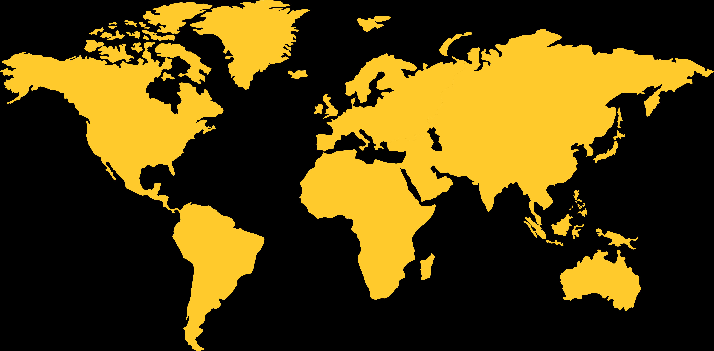

Land Grabbing bezeichnet den grossflächigen Kauf oder die langfristige Pacht von landwirtschaftlichem Boden (meistens in S1- oder S2-Ländern) durch oft ausländische Staaten, Unternehmen oder Investor*innen. Klicke auf einen der Hotspots auf der Karte, um mehr über ein konkretes Fallbeispiel zu erfahren.

Fallbeispiel — klicken zum Öffnen
Ergebnissicherung
Teste dein Wissen zum Thema Land Grabbing — Frage für Frage.